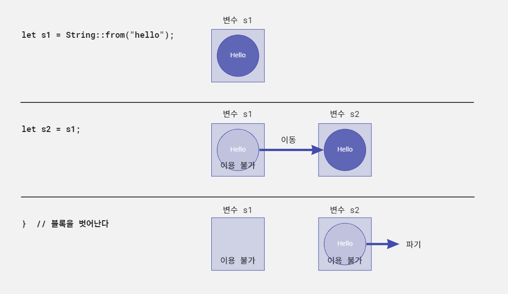
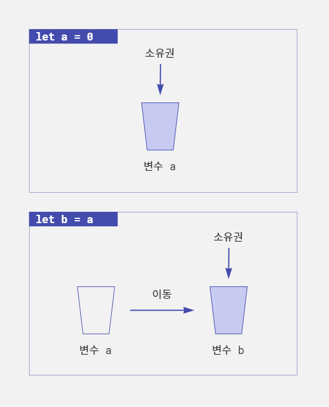
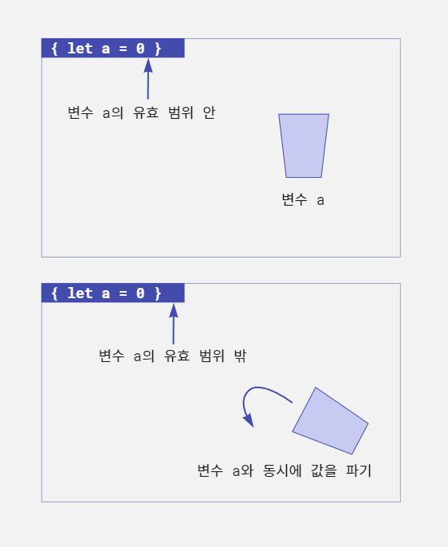

프로젝트들
공부 정리글 모음
C
Rust
Rust
#패스트캠퍼스, #국비지원교육, #메가바이트스쿨, #MegabyteSchool, #개발자취업부트캠프, #내일배움카드
last edited 2023.01.26
러스트의 소유권 시스템에 대해 쉬운 설명으로 알아보자
▶ 만들면서 배우는 러스트 프로그래밍 -쿠지라 히코우즈쿠에- ◀ 을 참조하여 정리하였다.
러스트에는 메모리 안전성을 확보하기 위한 '소유권(ownership)'이라는 시스템이 있다. 이는 다른 언어에서는 없는 개념으로 러스트를 배우는데 있어서 첫번째 난관이 된다.
소유권 시스템이란 무엇인가
러스트는 안전성을 가지면서도 효율적인 고속 프로그래밍 언어다. 마찬가지로 효율적인 프로그래밍 언어인 C 언어는 메모리 관리가 어렵고, 메모리와 관련된 버그가 많이 발생한다. 안전성 향상에 큰 역할을 하는 것이 바로 이 소유권 시스템이다. 소유권 시스템은 러스트의 가장 중심이 된다고 해도 과언이 아니다.
소유권 시스템을 간단히 표현하면
소유권 시스템은 간단히 말하면 확보한 메모리를 사용이 끝난 시점에 자동으로 파기하는 기능이다. 확보한 메모리를 이용할 수 있는 범위를 명확히 한정 지어 효율적으로 메모리를 관리한다.
이 구조를 러스트 코드 형태로 확인해보자. 러스트에서는 중괄호를 이용해 임의의 장소에 블록을 선언할 수 있다.
(스포일러 주의! 예시에서 String타입을 사용했다는 것을 유념하자.)
{
// 여기서 String 메모리를 확보
let s = String::from("hello");
// ...
// ... 여기서 변수 s를 이용한 처리를 수행
// ...
}
// 블록을 벗어나면 변수 s의 메모리를 파기이 예시는 기본적인 소유권 시스템의 동작을 나타낸다. 블록 안에서 확보된 메모리는 블록을 벗어나는 순간 자동으로 파기된다. 이처럼 러스트는 메모리의 유효 범위가 정해져 있다.
메모리를 확보한 후에 그 메모리를 누군가 책임지고 파기해야 하는 부분도 명확하게 정해져 있다.
예를 들어 다음과 같은 코드에서는 변수 s1에서 메모리를 확보한다. 그리고 도중에 변수 s2로 확보된 메모리가 이동된다.
{
// 여기서 메모리를 확보
let s1 = String::from("hello");
// 다른 변수에 값을 넘긴다
let s2 = s1;
}
// 블록을 벗어나면 변수 s2의 메모리를 파기이 경우 변수 s1에서 확보한 메모리는 s2로 이동된다. 변수 s1과 s2의 메모리를 모두 파기하려고 하면 메모리 이중 해제가 발생한다. 그래서 변수 s1에서 s2로 값을 이동한 것을 러스트
컴파일러가 검출해 변수 s2이 메모리만을 파기하도록 한다.
다음 그림은 프로그램의 동작과 그에 따른 메모리 상태를 나타낸다. 변수 s1에서 변수 s2로 메모리가 이동하면 변수 s1은 더 이상 이용할 수 없다. 그리고 블록을 벗어나면 변수 s2의 메모리가
파기된다. 메모리 이중 해제는 심각한 메모리 에러가 발생한다. 러스트 컴파일러는 변수 s1에서 변수 s2로 값이 이동할 때 s1을 이용할 수 없게 관리하므로 이중 해제는 발생하지 않는다.

이 기본적인 구조를 러스트에서는 '소유권'이라고 한다. 그리고 메모리의 유효성을 검증하는 컴파일러의 이 기능을 Borrow checker(빌림 확인)라고 한다.
소유권 시스템의 장점
러스트에는 이 소유권 시스템이 있기 때문에 수동으로 메모리 확보와 해제를 하는 C/C++ 언어에서 종종 발생하는 메모리 관련 오류(이중 해제, 미해제)는 발생하지 않는다. 해제된 메모리를 가리키는 포인터를 '댕글링 포인터(Dangling pointer)'라고 한다. 이 댕글링 포인터에 혹시 접근이 되면 보안 취약점으로 이어지는 경우가 있다. 러스트에서는 기본적으로 댕글링 포인터에 접근할 수 없다. 소유권 시스템으로 인해 메모리가 원인이 되는 문제는 원천적으로 방지되며 메모리 안전성이 확보된다. 이것은 큰 장점이다.
GC(가비지 컬렉터 - Garbage collector)가 있는 언어라면 이런 메모리 관련 문제로 고민하지 않아도 된다. 하지만 GC는 메모리 관리 때문에 실행 속도나 메모리 효율을 희생해야 한다는 단점이 있다. 러스트는 GC를 이용하지 않고 소유권 시스템을 통해 메모리 관리를 하므로 안전하며 효율적으로 고속 프로그램을 만들 수 있다.
소유권 시스템의 단점
물론 소유권 시스템에 장점만 있지는 않다.
프로그래머가 소유권 시스템에 대해 제대로 이해해야 한다. 물론 새로운 프로그래밍 언어를 배울 때는 그 언어의 특징을 이해하는 것이 당연하지만 소유권 시스템은 다른 언어에서는 일반적인 개념은 아니므로 이해에 어려움이 따를 수 있다. 그리고 이는 러스트가 어렵다는 인상을 주는 데도 한몫한다.
소유권 시스템은 러스트 독자적인 것인가?
러스트의 소유권 시스템은 독자적으로 만든 것이 아니라 C++ 언어의 스마트 포인터(Smart pointer)가 그 기원이 된다. C++언어의 새로운 규격인 C++ 11(ISO/IEC 14882:2011)에는 표준으로 스마트 포인터를 이용할 수 있으며 소유권과 그 이동에 대한 기능이 포함돼 있다.
메모리 관리를 '소유권'으로 생각하는 것
'소유권'이라는 말의 의미는 무엇일까. 사전적인 정의를 보면 '물건을 전면적, 일반적으로 지배하는 권리. 물건이 가지는 사용 가치나 교환 가치의 전부를 지배할 수 있는 권리'라고 설명돼 있다. 그리고 '소유자'는 그 소유권을 가진 사람을 말한다.
예를 들어 어떤 집에 대한 소유권을 생각해보자. 집의 소유권을 가진 사람인 소유자는 그 집에서 살 수 있다. 가구 배치도 원하는 대로 할 수 있으며 집 안의 시설을 이용해 쾌적한 생활도 할 수 있다. 하지만 그 집을 누군가에게 팔면 그 집에 대한 아무런 권리도 없으므로 그 집에서 더 이상 살 수 없다.
러스트의 소유권 시스템도 이와 마찬가지다. 변수를 대입하거나 함수를 호출해 소유권을 가질 수 있지만 그 소유권이 한번 이동하면 원래의 변수는 다시 이용할 수 없다.
집은 소유하고 있는 중에 자기가 사는 것이 아니라 다른 누군가에게 세를 줄 수 있다. 이 경우 집의 소유권은 소유자에게 있지만 그 집에 살 수 있는 권리는 세입자에게 있다. 러스트에서도 이렇게 일시적으로 권리를 부여해줄 수 있다. 메모리 관리에 '소유권'이라는 말을 이용하는 것은 꽤 잘 어울린다.
소유권의 3대 기본 원칙
러스트의 소유권 시스템에는 기본적인 세 가지 원칙이 있다.
- 값에는 '소유권'이 있으며 변수는 값의 '소유자'가 된다.
- 소유권은 이동할 수 있지만 '소유자'는 1개(1개의 변수)뿐이다.
- '소유자'가 유효한 범위(Scope)를 벗어나면 값은 파기된다.
이 원칙을 조금 더 자세히 살펴보자.
원칙 1은 '소유권'과 '소유자'를 규정하는 것이다. 러스트에서 다루는 '값'에는 소유권이 있으며 그 소유권을 가지는 '소유자'가 있다는 것이다.
원칙 2는 값의 소유권은 한 변수에서 다른 변수로 '이동(move)'할 수 있다는 것이다. 소유권이 이동한 뒤에는 그 변수를 이용할 수 없다. 소유권의 이동은 변수에 값을 대입하거나 함수를 호출했을 때 발생한다.
예를 들어 물과 물컵을 가지고 생각해보자. 물컵이 '변수'이며 물 그 자체는 '소유권'이라고 가정한다.
물컵 a에 따른 물을 물컵 b에 옮겨 따랐다. 이때 물컵 a는 비어 있으므로 마실 수 없는 상태다. 마찬가지로 변수 a에 있는 소유권을 변수 b로 옮기면 변수 a는 값이 없는 상태이므로 사용할 수 없는 것이다.

원칙 3은 소유권의 파기에 관한 규칙이다. 변수에는 이용 가능한 범위(Scope)가 있다. 변수가 유효한 범위를 벗어나면 자동적으로 변수는 파기된다. 그리고 변수를 파기할 때 변수가 값의 소유권을 가지고 있다면 값 역시 파기된다. 러스트에 소유권 시스템이 있는 것은 이렇게 명확한 메모리 파기 규칙을 위해서다.

소유권 시스템 체험하기
소유권 시스템을 프로그램에서 직접 확인해보자. 다음은 소유권 시스템의 간단한 예다.
fn main() { let g1 = String::from("온화한 마음은 몸에 좋다."); // (1) let g2 = g1; // 소유권을 g2로 이동 (2) println!("{}", g2); // (3) }
이 소스 코드는 문제가 없다. (1)에서 String::from 메서드를 이용해 String 객체를 만들고 변수를 g1에 대입한다. 이때 String 객체의 소유자는 g1이다. g1
이 String 객체의 소유권을 가지고 있는 것이다.
그리고 (2)에서 변수 g2에 g1을 대입한다. 이를 통해 객체의 소유권은 g1에서 g2로 '이동(move)'한다.
(3)에서는 g2의 내용을 화면에 표시한다. String 객체의 값은 변수 g1에서 g2로 이동됐으므로 g2의 내용을 출력할 수 있다.
물컵의 예로 생각해보자. (1)에서는 물을 g1이라는 컵에 부었다. (2)에서는 g2라는 컵에 g1컵에 들어있던 물을 부었다. g1잔은 비어있으므로 마실 수 없다.
그렇다면 비어있는 g1을 이용하고자 하면 어떻게 될까. 위의 소스 코드를 변경해서 확인해보자.
fn main() { let g1 = String::from("온화한 마음은 몸에 좋다."); // (1) let g2 = g1; // 소유권을 g2로 이동 (2) println!("{}", g1); // 비어있는 g1을 이용할 수 있을까? }
이 소스 코드를 컴파일하려 하면 다음과 같이 에러가 발생한다.
$ rustc owner_simple_err.rs
warning: unused variable: `g2`
--> owner_simple_err.rs:3:9
|
3 | let g2 = g1; // 소유권을 g2로 이동
| ^^ help: if this is intentional, prefix it with an underscore: `_g2`
|
= note: `#[warn(unused_variables)]` on by default
error[E0382]: borrow of moved value: `g1`
--> owner_simple_err.rs:4:20
|
2 | let g1 = String::from("온화한 마음은 몸에 좋다.");
| -- move occurs because `g1` has type `String`, which does not implement the `Copy` trait
3 | let g2 = g1; // 소유권을 g2로 이동
| -- value moved here
4 | println!("{}", g1); // 비어있는 g1을 이용할 수 있을까?
| ^^ value borrowed here after move
|
= note: this error originates in the macro `$crate::format_args_nl` which comes from the expansion of the macro `println` (in Nightly builds, run with -Z macro-backtrace for more info)
error: aborting due to previous error; 1 warning emitted
For more information about this error, try `rustc --explain E0382`.
'error[E0382]: borrow of moved value: g1 (이동된 값 g1을 빌리려 했음)'이라는 에러가 발생한다. 그리고 g1에 'value borrowed here after move(이동
후에 여기서 값을 빌림)'라는 에러 메시지가 표시된다. 빌림은 소유권 시스템에서 이용하는 개념 중 하나로 소유자에게 값을 빌리거나 돌려줄 수 있다. 이에 대해서는 나중에 알아보자. 여기서는 물컵의 예에서 g1은
이미 빈 컵이므로 물을 마실 수 없다는 의미로 이해하자.
소유자가 유효 범위에서 벗어나면 파기
3번째 원칙인 범위를 벗어나는 경우 값을 파기한다는 점에 대해서도 생각해보자. 러스트에서는 중괄호 { ... }로 블록(범위)을 표현할 수 있다. 즉 중괄호 안에 선언한 변수에 대입한 값은 중괄호를 벗어나면
파기된다. 러스트는 범위를 벗어나면 범위 안에서 이용한 변수에 대해 자동으로 drop 함수를 호출한다.
fn main() { // 블록 { let s1 = String::from("재능은 한계가 있지만 노력엔 한계가 없다"); println!("{}", s1); } // 블록을 벗어나면 s1은 파기된다. }
여기서는 블록 안에서 String객체를 생성하고 변수 s1에 대입한다. 이때 변수 s1에 객체의 소유권이 있다. 이 블록을 벗어날 때, 즉 소유자 s1의 유효 범위에서 벗어날 때 s1이 소유권을
가지고 있던 String객체가 파기된다.
다음 프로그램도 확인해보자. 블록 1 안에서 또 다른 블록 2를 설정했다.
fn main() { // 블록 1 { let s1 = String::from("인생에 뜻을 세우는 데 있어 늦은 때라곤 없다."); let s3 = String::from("한걸음 한걸음씩"); // 블록 2 { let s2 = s1; println!("{}", s2); } // s2의 값은 여기서 파기된다. println!("{}", s3); } // s3의 값은 여기서 파기된다. }
블록 1 안에서 s1과 s3에 String 객체를 만들어 대입했다. 블록 2 안에서 s2에 s1을 대입했다. 여기서 s1의 값 소유권이 s2로 이동한다. 그리고 이곳은 다른 블록의 안쪽이므로
이 블록을 벗어나면 변수 s2는 사용할 수 없다. 그와 동시에 s2가 소유권을 가지고 있는 값 '인생에 뜻을 세우는 데 있어 늦은 때라곤 없다.'라는 문자열도 파기된다. 마지막으로 블록 1이 종료될
때 s3의 값도 파기된다.
소유권 시스템을 적용받지 않는 타입
러스트의 모든 값이 소유권 시스템의 대상이 되는 것은 아니다. 정수, 부동 소수점 등의 숫자 타입, Boolean 타입 등은 소유권 시스템이 동작하지 않는다. 이 타입은 대입(bind-속박)이나 함수 호출이 될 때 소유권이 이동(move)하는 것이 아니라 자동으로 복사(copy)된다. 따라서 소유권 이동은 일어나지 않는다. 이런 기본 타입은 컴파일할 때 데이터의 크기가 명확하게 결정되어 있어 해당 데이터가 스택 영역에 확보된다.
힙 영역과 스택 영역
'힙(heap) 영역'과 '스택(stack) 영역'은 무엇일까. 메모리 관리는 OS의 일이다. OS는 응용 프로그램의 요청에 따라 메모리를 할당하거나 불필요해진 메모리를 회수한다. OS는 메모리를 할당할 때 크게 두 가지 방법으로 메모리를 관리한다. 이것이 힙과 스택이다.
'힙 영역'에 저장된 메모리는 임의의 순서로 메모리를 확보하거나 해제할 수 있다. 원할 때 필요한 만큼 메모리를 확보할 수 있다. 반면 '스택 영역'에 저장된 메모리는 순차적(마지막에 있는 메모리부터)으로만 메모리를 확보하고 해제할 수 있다.
따라서 메모리 크기가 이미 정해진 데이터는 스택 영역에 저장할 수 있지만 크기가 변하는 가변 데이터는 힙 영역에 저장해야 한다. 그래서 문자열(String 타입)이나 구조체 같이 크기가 변하는 데이터는 힙 영역에
저장된다.
반면 숫자 데이터 등의 기본 타입 데이터는 스택 영역에 저장되므로 데이터 복제가 빠르고 쉽다. 그래서 처음부터 소유권 관리를 하지 않고 값을 복사하는 것이다.
기본 타입에서 소유권이 이동하지 않는 것을 확인
기본 타입 데이터에서 소유권이 정말 이동하지 않는지 프로그램을 만들어 확인해보자. 다음은 변수 g2에 g1의 값을 대입한 뒤 g1을 계속해서 이용하는 것을 보여주는 예다.
fn main() { let g1 = 30; let g2 = g1; // 값이 자동으로 복사됨 (1) println!("{}", g1); // ok println!("{}", g2); // ok }
컴파일 후 프로그램을 실행해보면 g1의 값과 g2의 값이 모두 출력되는 것을 확인할 수 있다.
컴파일 에러도 발생하지 않고, g1과 g2의 값을 모두 출력했다. 위 소스 코드를 소유권 에러가 발생했던 소스 코드와 비교해보자.
에러가 발생한 소스 코드에서는 String타입 데이터를 이용했고 이 소스 코드에서는 i32타입 데이터를 이용했다.
(1) 부분에서 g1의 값을 g2에 대입한다. 이때 기본 타입 데이터는 스택 영역에 저장되므로 직접 복사된다. 반면 기본 타입 외 데이터는 힙 영역에 보관되므로 소유권 시스템의 관리를 받게 된다. 따라서
복사가 아니라 이동으로 처리된다.
표를 통해 이 내용을 다시 한번 확인해보자.
| 데이터 타입 | let 문으로 대입했을 때의 동작 |
|---|---|
| 기본 타입(Primitive type - 원시 타입) | 복사(copy) |
| 기본형 외의 타입 | 이동(move) |
단, 기본형 이외의 데이터 타입에서도 Copy 트레잇(trait)을 구현한 데이터 타입이라면 데이터를 복사 할 수 있다. 기본 타입 데이터는 모두 Copy트레잇이 구현되어 있다. 트레잇이란 다른
데이터형에 대해 공통 동작을 정의하는 것이다.
참조 카운터로 값을 관리하는 Rc와 Arc
기본 타입 값 이외에도 소유권 시스템에 적용되지 않는 값이 있다. 바로 Rc<T>와 Arc<T> 타입이다.
이 데이터 타입을 이용하면 참조 카운터를 사용해 메모리 관리를 할 수 있다. 표현 데이터에 따라서는 소유권 시스템보다 참조 카운터를 사용하는 게 메모리 관리에 유리할 수 있는데 그 경우 이 2가지 타입을 이용한다.
복제할 때의 소유권
소유권이 이동하는 타입(문자열과 구조체)이라도 데이터를 복제(clone)해서 소유권 이동을 피할 수 있다. 다음은 String타입을 복제하는 예다.
fn main() { let g1 = String::from("온화한 마음은 몸에 좋다."); let g2 = g1.clone(); // 복제하면 소유권은 이동하지 않는다 println!("{}", g1); // ok println!("{}", g2); // ok }
g2에 값을 대압하는 부분을 보면 .clone()이라는 메서드가 추가되어 있다. String 타입의 clone 메서드는 값을 복제하는 메서드다. 단순히 대입을 하면 소유권이 이동하지만 복제를 하면
소유권은 이동하지 않는다. 따라서 g1과 g2를 모두 이용할 수 있다.
#패스트캠퍼스, #국비지원교육, #메가바이트스쿨, #MegabyteSchool, #개발자취업부트캠프, #내일배움카드
last edited 2023.01.26
빌림과 참조에 대해 쉬운 설명으로 알아보자
▶ 만들면서 배우는 러스트 프로그래밍 -쿠지라 히코우즈쿠에- ◀ 을 참조하여 정리하였다.
소유권은 함수를 호출해도 이동한다. 하지만 함수를 호출할 때마다 소유권이 이동하면 프로그래밍이 어려워진다. 그래서 일시적으로 소유권을 빌리는 '빌림'에 대해 알아보자. 빌림 외에도 함수와 소유권의 관계, 참조에 대해서도 알아본다.
'빌림'이란
'빌림'은 빌려쓴다는 뜻이다. 실생활에서도 자기 것이 아닌 물건을 원 주인의 양해를 받고 가져와 쓰는 것을 빌린다고 한다.
러스트에서 말하는 빌림(borrow/borrowing)도 의미는 같지만 여기서는 물건이 아니라 값의 소유권이다. 그리고 빌리는 것이므로 소유권을 완전히 받는 것이 아니라 일시적으로 가져오고 사용이 끝나면 반납한다.
함수 호출로 이동하는 소유권
소유권은 값 대입 외 함수 호출로도 이동한다. 함수를 호출할 때 인수로 값을 지정하면 그 값의 소유권은 호출한 함수의 인수로 이동한다.
함수 호출에 따른 소유권 이동에 대해 자세히 살펴보자.
fn main() {
let g1 = String::from("실수할 줄 아는 사람이 아름답다.");
show_message(g1); // 소유권이 이동한다
println!("{}", g1); // g1은 사용할 수 없다.
}
fn show_message(message: String) {
println!("{}", message);
}이 프로그램을 컴파일하면 다음과 같이 에러가 발생한다.
$ rustc owner_func_err.rs
error[E0382]: borrow of moved value: `g1`
--> owner_func_err.rs:4:20
|
2 | let g1 = String::from("실수할 줄 아는 사람이 아름답다");
| -- move occurs because `g1` has type `String`, which does not implement the `Copy` trait
3 | show_message(g1); // 소유권이 이동한다
| -- value moved here
4 | println!("{}", g1); // g1은 사용할 수 없다
| ^^ value borrowed here after move
|
= note: this error originates in the macro `$crate::format_args_nl` which comes from the expansion of the macro `println` (in Nightly builds, run with -Z macro-backtrace for more info)
error: aborting due to previous error
For more information about this error, try `rustc --explain E0382`.
에러 메시지를 확인해보자. 직접적인 에러는 'error[E0382]: borrow of moved value: g1(이동된 값 g1을 빌림)'이다.
여기서 주목할 점은 어디에서 g1의 값이 이동했는지다. 프로그램의 3번째 줄에서 호출한 함수 show_message의 인수 g1부분에 'value moved here(여기에서 값이 이동됨)'이라는 힌트가
표시된다.
즉 함수 호출로 소유권 이동이 발생했으므로 4번째 줄의 println!에서 g1의 값을 사용할 수 없게 된 것이다.
소유권 돌려주기
앞의 예제에서는 변수 g1의 소유권이 이동했으므로 에러가 발생했다. 이번에는 g1을 이용하면 함수를 호출한 곳에 소유권을 돌려주도록 해보자.
fn main() { let mut g1 = String::from("실수할 줄 아는 사람이 아름답다."); g1 = show_message(g1); // (1) println!("{}", g1); // ok (2) } // String을 받아 String을 반환하는 함수 fn show_message(message: String) -> String { println!("{}", message); return message; }
컴파일 후 실행해보면 '실수할 줄 아는 사람이 아름답다.'라는 문장이 2번 출력된다.
소스 코드를 살펴보자. (1)에서는 변수 g1의 값을 인수로 지정해 함수를 호출한다. 이를 통해 g1값의 소유권은 함수로 넘어간다. 하지만 함수의 반환 값을 통해 소유권을 다시 돌려받는다. 그래서 (2)
에서도 g1을 이용할 수 있다.
물컵의 예로 생각하면 g1컴에 따라둔 물을 show_message함수의 인수 message라는 컵으로 옮긴 후 다시 g1컵으로 옮긴 상태다.
여기서 변수 g1을 선언할 때 mut을 붙여 가변 변수로 선언을 했다. 동일한 값인데 mut을 선언한 이유는 내부적으로 대입 동작이 발생하기 때문이다. 대입은 초기화와는 다른 동작이므로 값이 변하는 것으로
간주되기 때문이다.
(3)의 함수 show_message가 이전 예제와 다른 점은 인수 message를 그대로 반환 값으로 한 것이다. 이를 통해 함수를 호출했을 때 값 소유권을 함수의 변수 message로 이동한 뒤 실행이
종료되면 다시 함수를 호출한 곳으로 돌려줄 수 있다.
참조와 빌림 - 함수 호출을 했을 때 소유권을 이동하지 않는 방법
함수 호출만으로 값의 소유권이 이동하는 것은 불편할 때도 있다. 그래서 러스트에는 소유권을 일시적으로 빌려주는 '빌림(borrow)'이라는 시스템을 마련해두고 있다.
값을 빌리기 위해서는 참조자를 나타내는 &을 붙인다. 바꿔 말하면 함수의 인수를 '참조자'로 만드는 것을 '빌림'이라고 한다.
앞에서 다룬 예제를 빌림을 이용하는 형태로 변경해보자.
fn main() { let g1 = String::from("실수할 줄 아는 사람이 아름답다."); show_message(&g1); // 참조 값을 전달 (1) println!("{}", g1); // 소유권은 이동하지 않음 (2) } fn show_message(message: &String) { // (3) println!("{}", message); }
컴파일 후 실행해보면 앞서와 마찬가지로 show_message에서 한 번, println!에서 한 번씩 메시지가 출력되어 총 2개의 메시지가 출력된다.
가장 앞 부분에서 설명한 에러가 발생하는 소스 코드와 비교해보면 차이점은 단 2글자뿐이다. (1)에서 함수를 호출할 때 참조자라는 것을 명시하기 위해 &를 붙인 것, 그리고 (3)에서 함수의 인자로 참조자를
전달한다는 것을 명시하기 위해 역시 &을 붙인 것이 전부다. 이를 통해 (2)에서 변수 g1의 값을 이용할 수 있다.
이처럼 참조자를 전달하도록 변경하면 소유권 문제를 해결할 수 있다. 값을 참조해서 사용한다는 것은 값의 소유권을 일시적으로 빌리는 '빌림'이기 때문이다.
&String은 &str과 다른가
앞의 프로그램에서는
String타입의 참조 타입인&String을 썼다. 하지만 문자열 참조 타입으로&str을 이용할 수도 있다. 러스트의 많은 함수는 문자열 참조 타입으로&str을 이용한다.&String과&str은 대부분의 경우 동일하게 사용할 수 있다. 하지만 엄밀히 말하면&str은 슬라이스다. 슬라이스는 배열과 같은 요소의 일부를 참조하기 위한 타입이다. 자세한 내용은 문자열에 대해 알아볼때 다뤄보자.
참조자를 반환하는 함수
함수에서 참조자를 반환해야 하는 경우도 있다. 예를 들어 함수 안에서 어떠한 데이터를 만들고, 값이 아니라 그 참조자를 반환해야 하는 경우다. 그런데 러스트에서는 값에 수명(Lifetime)이 있다.
다음 소스 코드는 함수 gen_message로 메시지를 만든 뒤 그 참조자를 반환하려는 의도로 만들어진 것이다. 하지만 에러가 발생한다. 어떤 부분이 잘못되었는지 살펴보자.
// 메시지를 생성한 뒤 그 참조자를 반환하는 함수
fn gen_message() -> &str {
let msg = String::from("실수할 줄 아는 사람이 아름답다.");
return &msg;
}
fn main() {
let m = gen_message();
println!("{}", m);
}$ rustc owner_lifetime_err.rs
error[E0106]: missing lifetime specifier
--> owner_lifetime_err.rs:2:21
|
2 | fn gen_message() -> &str {
| ^ expected named lifetime parameter
|
= help: this function's return type contains a borrowed value, but there is no value for it to be borrowed from
help: consider using the `'static` lifetime
|
2 | fn gen_message() -> &'static str {
| +++++++
error: aborting due to previous error
For more information about this error, try `rustc --explain E0106`.
에러 메시지를 확인해보자. 'error[E0106]: missing lifetime specifier(수명 지시자가 없음)'이라고 표시된다. 도움말(help)을 보면 'this function's return type contains a borrowed value, but there is no value for it to be borrowed from(이 함수가 반환하는 값은 빌린 값을 포함하고 있으나 빌림 값이 존재하지 않음)'이라고 표시된다.
즉, 수명을 지정하지 않았기 때문에 에러가 발생한 것이다.
앞에서 '소유자'가 유효한 범위(Scope)를 벗어나면 값은 파기된다'는 소유권 시스템의 기본 원칙을 바탕으로 생각해보자. 함수 gen_message는 하나의 범위다. 변수 msg는 이 범위 안에서만
유효하며 범위를 벗어나는 순간 msg값은 파기되는 것이다. 따라서 msg의 값에 대한 참조를 반환하더라도 msg값은 파기되므로 값이 사라지기 때문에 에러가 발생한다.
그렇다면 이 소스 코드를 어떻게 고쳐야 할까? 참조가 안 된다면 실제값을 이용하면 된다. 즉 참조가 아닌 String객체의 실제값을 반환하도록 수정한다.
// 메시지 생성 함수 fn gen_message() -> String { let msg = String::from("실수할 줄 아는 사람이 아름답다."); return msg; // 소유권이 함수의 반환 값으로 이동 (1) } fn main() { let m = gen_message(); // 소유권은 m으로 이동 (2) println!("{}", m); // ok }
(1)부분에서 변수 msg값의 소유권은 함수의 반환 값으로 이동한다. 즉, (2)부분의 변수 m이 msg값의 소유권을 가지게 된다. 따라서 println! 매크로로 m의 값을 출력할 수 있다.
가변 참조자를 인수로 사용하기
함수 호출에 참조자를 사용할 때 함수 안에서 인수의 값을 변경해야 하는 경우도 있다. 이때는 참조자가 가변이라는 것을 명시하면 함수 안에서 인수의 값을 변경할 수 있다.
다음은 인수에 지정한 String 타입 값을 함수 안에서 변경하는 프로그램이다.
// 인수의 문자열을 변경하는 함수 (1) fn add_quote(msg: &mut String) { msg.insert(0, '"'); msg.push('"'); } fn main() { let mut msg = String::from("건강한 신체에 건강한 정신이 깃든다."); println!("{}", msg); // (2) add_quote(&mut msg); // (3) println!("{}", msg); // (4) }
컴파일 후 실행해보면 문자열의 앞뒤에 큰따옴표가 추가된 것을 확인할 수 있다.
함수의 인수로 지정한 값의 참조자를 변경하려면 (1)의 함수 정의에서 인수를 &mut 타입 형태로 지정한다. 이렇게 하면 그 타입이 가변 참조자가 된다. 그리고 (3)에서와 같이 함수를 호출할 때 &mut을
지정해 함수를 호출한다.
main함수를 보면 String타입 값을 만들고 가변 변수 msg에 대입한다. 그리고 (2)에서 내용을 출력한다. (3)에서는 add_quote함수를 호출한다. 호출할 때 인수에 &mut을 추가해
가변 참조자라는 것을 명시한다. add_quote함수는 msg의 앞과 뒤에 큰따옴표를 추가한다. 그리고 (4)에서 큰따옴표가 추가된 문자열을 출력한다.
여기서 주의할 것은 add_quote함수를 호출할 때 값 그 자체가 아니라 mut에 &를 붙여 가변 참조자를 지정한다는 점이다. 참조자이므로 값을 빌리기만 하므로 (4)에서 msg를 이용할 수 있다.
함수를 호출해서 인수를 변경하는 방법
함수의 인수로 지정한 변수를 변경하는 방법을 다시 한번 확인하자. 문법은 다음과 같다.
// 함수 정의
fn 함수이름(변수명: &mut 타입) {
// 실제값을 얻음
let value = *변수명;
// 변수를 갱신
*변수명 = 새로운 값;
}
// 함수 호출
함수(&mut 변수);함수를 정의할 때 변수에 대한 참조자를 전달할 수 있게 변수명: &mut 타입을 지정한다. 그리고 함수를 호출할 때는 함수(&mut 변수)와 같이 변수가 가변이며 참조자라는 것을 명시한다.
함수의 실제 내용에는 변수의 참조자로부터 실제값을 얻기 위해 *변수명과 같이 기술한다. 이것을 '역참조(dereference)'라고 한다. 값을 변경하는 경우에도 역참조를 지정해 *변수명 = 새로운 값;과
같이 기술한다.
인수를 변경하는 예
다음은 가변 변수를 선언한 뒤 함수를 이용해 원래의 변수값을 변경하는 간단한 예이다.
// 인수의 값에 2를 곱해 반환하는 함수 (1) fn x2(arg: &mut i32) { *arg = *arg * 2; } fn main() { let mut v = 16; x2(&mut v); // 인수에 2가 곱해진다 (2) println!("{}", v); }
컴파일 후 실행해보면 원래 16이었던 v의 값이 2배가 되어 32가 출력된다.
프로그램을 확인해보자. (1)은 인수로 전달된 값에 2를 곱하는 함수다. 여기서 중요한 점은 가변 참조자를 이용할 수 있도록 인수 타입 앞에 &mut을 붙이는 것이다.
(2)에서는 함수를 호출한다. 이 함수에 전달하는 인수는 가변 참조자여야 하기 때문에 &mut을 붙인다.
참조 호출과 값 호출의 차이
함수를 호출할 때 인수를 어떻게 전달하느냐에 따라 값 호출(Call by Value)와 참조 호출(Call by Reference)로 나뉜다. 러스트뿐 아니라 다른 일반적인 프로그래밍 언어에서도 이 두 가지 방법이 사용된다.
값 호출은 값 그 자체를 인수로 전달하는 것이며 참조 호출은 변수의 참조자를 사용하는 것이다.
함수를 호출할 때 '값 전달'이 이루어지면 함수의 인수로 지정된 '값'이 그대로 전달되는 것이 아니라 값이 복사되어 함수로 전달된다. 그러므로 함수 안에서 그 값이 어떻게 가공이 되더라도 변수를 호출한 곳에서는 아무런 영향을 받지 않는다. 즉 안전하다. 물론 함수의 인수로 변수를 지정했을 때도 전달되는 것은 변수가 아니라 변수 '값'의 사본이기 때문에 호출한 곳의 변수는 영향을 받지 않는다.
반면 '참조 호출'은 참조자(변수가 가리키는 주소)가 전달된다. 이 경우 함수 안에서 인수의 내용을 변경하면 함수를 호출한 곳의 값도 바뀐다.
러스트에서 참조 전달을 하는 경우 함수의 인수에 참조를 나타내는 &를 지정한다. 러스트에서 값 전달을 하는 경우 소유권 시스템의 규칙이 적용된다. 즉 기본 타입(또는 Copy트레잇이 구현된 타입)이라면 값이
복사되지만 그 외의 타입에서는 소유권이 이동한다.
println! 매크로 사용 방법 정리
println!은 표준 출력으로 임의의 서식을 가진 문자열을 출력하는 매크로다. 러스트 프로그래밍을 하는 데 있어 가장 자주 사용하는 기능 중 하나다. 여기서는println!매크로 사용 방법을 정리해본다.소유권 문제가 발생하지 않는다.
println!매크로는 소유권과 관련된 문제가 발생하지 않게 구현되어 있다. 다음은println!을 모방해echo함수를 만들어 사용하는 예이다. 하지만 이 함수는 소유권이 이동하기 때문에 에러가 발생한다.fn main() { let s = "Fast and Robust".to_string(); echo(s); // <- 소유권이 이동한다. println!("{}", s); } // println!을 모방한 함수 fn echo(s: String) { println!("{}", s); }컴파일을 해보면 소유권과 관련된 에러가 발생한다. 하지만
println!매크로를 이용하면 문제가 없으며, 다음과 같이 몇 번이나 같은 값을 이용할 수 있다.fn main() { let s = "Fast and Robust".to_string(); println!("{}", s); // 소유권이 이동하지 않는다. println!("{}", s); }값을 임의의 장소에 넣을 수 있다.
변수나 값을 문자열 안의 임의의 장소에 넣을 수 있다. 그리고 값을 순서대로 채워넣는 것이 아니라
...{2}...{1}...{0}...과 같이 순서를 임의로 지정할 수도 있다.예를 들어 연도 표시 방법은 나라에 따라 상이하다. 미국에서는 '월/일/년' 순으로 쓰지만 영국에서는 '일/월/년' 순으로 쓴다. 인수 순서는 변경하지 않고 서식만 변경해서 이런 문제에 대응할 수 있다.
fn main() { let year = 2023; let month = 12; let day = 1; println!("KR:{0}/{1}/{2}", year, month, day); // 한국 println!("US:{1}/{2}/{0}", year, month, day); // 미국 println!("UK:{2}/{1}/{0}", year, month, day); // 영국 }그리고 다음과 같이 인수에 이름을 붙여서 대입하는 것도 가능하다.
fn main() { let year = 2023; let month = 12; let day = 1; println!("{yy}년 {mm}월 {dd}일", dd = day, mm = month, yy = year); }서식(format)을 지정할 수 있다.
| 서식 | 설명 | 사용 예 | 입력 | 결과 |
|---|---|---|---|---|
{:<n} | n자리 왼쪽 정렬 | _{:<5}_ | 30 | _30 _ |
{:>n} | n자리 오른쪽 정렬 | _{:>5}_ | 30 | _ 30_ |
{:^n} | n자리 가운데 정렬 | _{:5}_ | 3 | _ 3 _ |
{:0<n} | n자리 왼쪽 정렬 후 0으로 채움 | _{:0<5}_ | 12 | 12000 |
{:>0n} | n자리 오른쪽 정렬 후 0으로 채움 | _{:>05}_ | 12 | 00012 |
{:b} | 2진수 | {:b} | 4 | 100 |
{:0nb} | 2진수에서 n만큼 0으로 채움 | {:08b} | 4 | 00000100 |
{:o} | 8진법 | {:o} | 438 | 666 |
{:x} | 16진수 | {:x} | 255 | ff |
{:0nx} | 16진수에서 n만큼 0으로 채움 | {:04x} | 15 | 000f |
{:.n} | 소수점 이하 n자리 표시 | {:.2} | 3.1415 | 3.14 |
{:e} | 지수 표시 | {:e} | 12.34 | 1.234e1 |
{:?} | 디버그 출력 | {:?} | [1,2,3] | [1, 2, 3] |
{:#?} | 디버그 출력(형태 정렬) | {:#?} | [1,2] | [(줄바꿈) 1, (줄바꿈) 2, (줄바꿈)] |
{{ | {를 출력 | {{ | 없음 | { |
}} | }를 출력 | }} | 없음 | } |
{:p} | 포인터 | {:p} | abc | (예)0x1022c2970 |
\" | "를 출력 | \" | 없음 | " |
\\ | \를 출력 | \\ | 없음 | \ |
서식을 이용해 보자.
fn main() { // 오른쪽 정렬 및 16진수 출력 println!("|{:>8}| #{:06x}", "red", 0xFF0000); println!("|{:>8}| #{:06x}", "green", 0x00FF00); println!("|{:>8}| #{:06x}", "blue", 0x0000FF); // 디버그 출력 println!("|{:>8}| RGB{:?}", "yellow", (255, 255, 0)); }이렇게
println!은 다양한 표현을 할 수 있으므로 활용도가 높다.println!은 표준 출력 용도이지만 문자열을 출력하지 않고String타입으로 만들어 주는format!매크로도 있다.format!매크로 역시println!매크로와 사용 방법은 동일하다.format!매크로 역시 활용도가 높으므로 사용법을 잘 익혀두자.